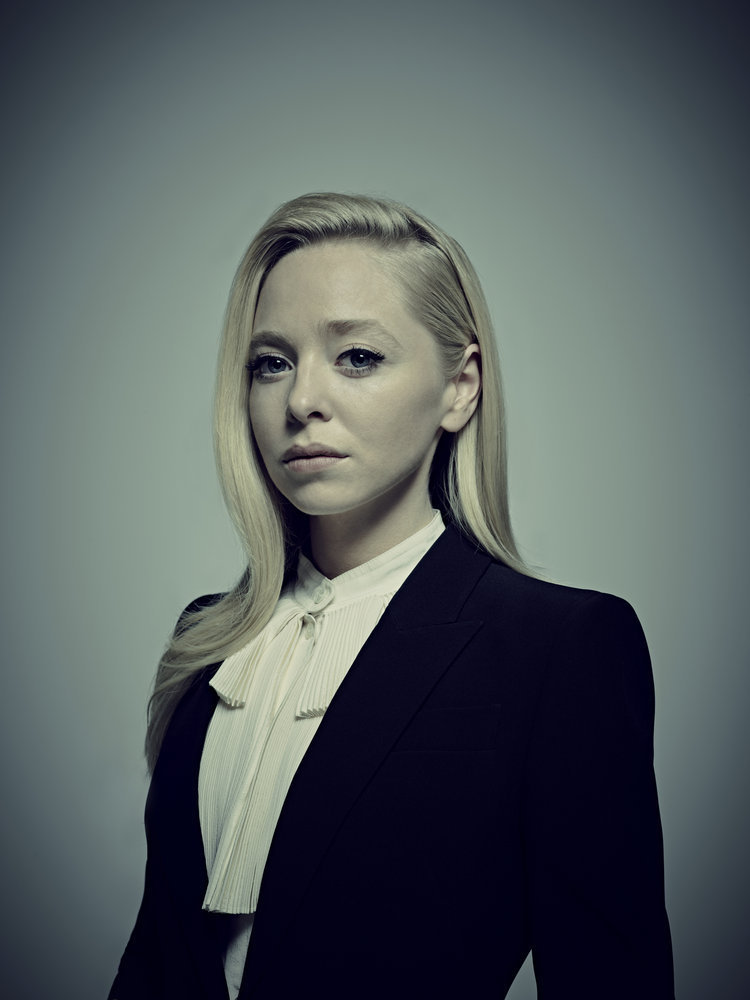

Eliot Alderson
Elliot Alderson es el personaje principal de la serie Mr. Robot. El es un ingeniero de Seguridad Informática, programador y un hacker vigilante que vive en New York City. Elliot sufre de trastorno de ansiedad social, depresión clínica, delirios y paranoia.
Tyrell Wellick
Tyrell Wellick es el exvicepresidente sénior de tecnología de E Corp. Lo interpreta Martin Wallström. Tyrell Wellick nació en Västra Götalands...
Darlene Alderson
Darlene Alderson es uno de los personajes protagonistas de la serie Mr. Robot. Es la hermana de Elliot y uno de los confundadores de fsociety.
Mr. Robot

Mr. Robot recluta a Elliott para que se una a su grupo de hackers "fsociety". Elliott tenía curiosidad, pero no estaba seguro de querer unirse al grupo ...
Angela Moss
Angela Moss es uno de los personajes de la serie Mr. Robot. Ella es la amiga más cercana de Elliot Alderson. Su papel es interpretado por Portia Doubleday.